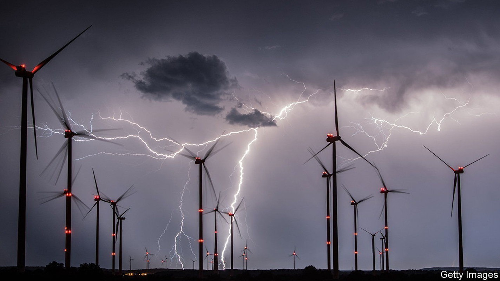

How the EU intends to collect “windfall profits” from energy firms
Two schemes would aim to collect and redistribute billions of euros

EUROPE IS EMBROILED in an energy crisis. Since Russia invaded Ukraine, and subsequently cut its energy exports to Europe, wholesale prices for gas and electricity have skyrocketed. Consumers and businesses are worried about paying hefty bills. In response, governments across Europe have implemented a patchwork of national measures to lower prices, save energy and support incomes. But many Europeans are outraged that energy companies are making record profits. On September 14th Ursula von der Leyen, the president of the European Commission, lamented that it was wrong to make fortunes “from war and on the back of consumers”. She has proposed a union-wide scheme to skim off €140bn ($140bn) in “excess” profits. Energy ministers are due to meet on September 30th to agree on the details. But how might that work?
The EU eyes two sets of excess profits. The first are those of fossil-fuel businesses, including oil, gas, coal and refinery firms, that are benefitting from very high energy prices. To calculate what is excessive the EU uses an average of the company’s profits over the past three years as the benchmark. If profit during 2022 is more than 20% higher than that benchmark, a third of anything above that 20% mark must be paid to governments. The choice of benchmark period is controversial, since it includes 2020 and 2021, the years of the covid pandemic when demand crashed and energy prices were very low. (The oil price was even briefly negative in April 2020.) The plan could face other opposition too. An Italian windfall tax introduced in March 2022 is currently being challenged in the court
The second set of excess profits is more complicated still. The cost of generating electricity varies depending on the energy used: gas is very expensive, while the sun shines for free, for example. On European electricity markets the price of power each hour is set by the most expensive power plant that is needed to meet demand. The system usually works well, but was not built for this crisis. High gas prices are coinciding with shortfalls in nuclear-power generation, as many reactors are closed for repair, and in hydroelectric-power generation, due to drought. And power plants which generate electricity using gas are the most flexible and able to fill gaps in power generation. That means that it is expensive gas-powered plants which are setting the price of energy in many European countries.
The result is very high prices for electricity. And potentially, and controversially, very high profits even for those energy companies whose costs have not increased, such as those using nuclear or wind. The EU proposes to cap the revenue that firms can receive on the market at €180 per megawatt hour (MWh). (The market price before the crisis was around €50 per MWh in Germany.) The flexible plants that are needed to meet demand, such as gas and coal-fired ones, are exempted from the cap. Revenues above the cap will be collected by grid operators to be redistributed, perhaps in the form of cash handouts to households. The €180 cap is generous to energy companies. Another Italian windfall-tax scheme imposed a cap of €60 per MWh for renewable generators. The cap is expected to remain in place until the end of March 2023, but could be extended if prices remain high. Based on current price projections, that may well happen. ■